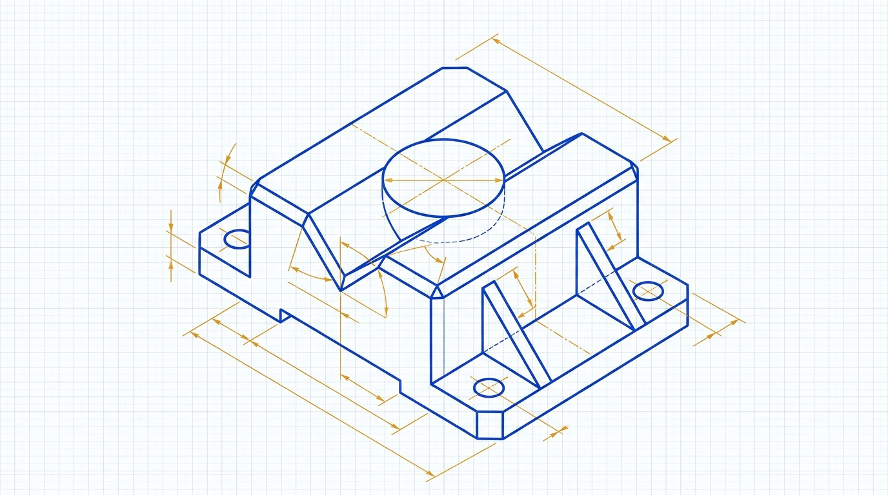
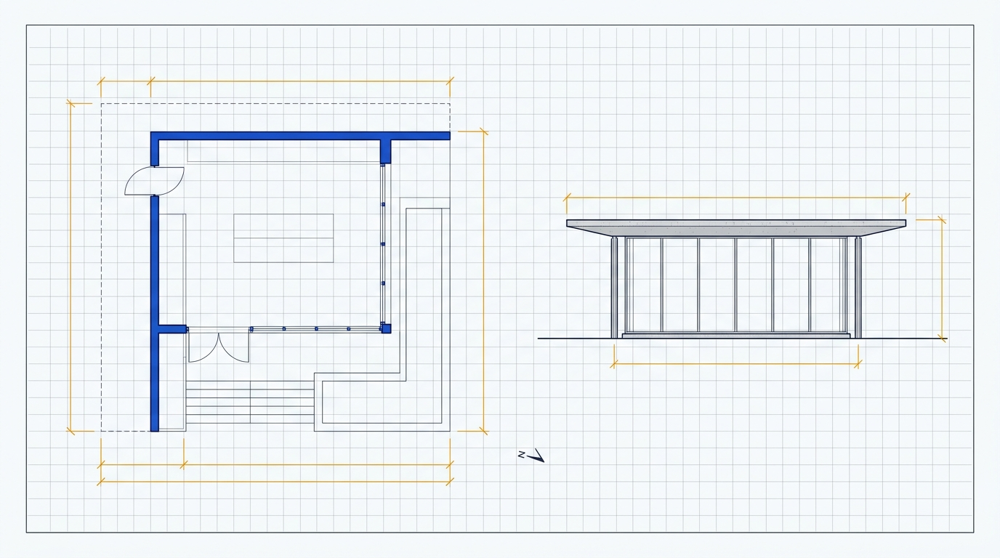

El lenguaje exacto entre la idea y la realidad construida.
El dibujo técnico transforma conceptos tridimensionales en documentación inequívoca. A través de proyecciones ortogonales, cotas normalizadas y tolerancias geométricas, ingenieros, arquitectos y diseñadores comunican sin ambigüedades cómo fabricar el mundo físico.
Haz clic en las etiquetas superiores para aislar cada vista ortogonal y comprender la correspondencia diédrica.
Explora cada Módulo y Lámina
Cada disciplina y segmento técnico cuenta con su propia página dedicada con ilustraciones generadas, esquemas interactivos y herramientas prácticas.
 02 · FUNDAMENTOS
02 · FUNDAMENTOS
Normalización, Líneas y Formatos
Estándares ISO/DIN/ANSI, formatos A0–A4 interactivos, instrumentos vs. CAD y sistemas ISO-E / ISO-A.
ABRIR PÁGINA→
03 · GALERÍAPlanos y Proyecciones HD
Portafolio filtrable con láminas de alta resolución, visor con zoom y conmutador a esquema SVG vectorial.
ABRIR PÁGINA→ 04 · HISTORIA
04 · HISTORIA
Del Arte Clásico al CAD/BIM
Línea de tiempo interactiva desde Euclides, Brunelleschi y Gaspard Monge hasta la era digital, con comparativa visual.
ABRIR PÁGINA→ 05 · APLICACIONES
05 · APLICACIONES
Sectores Industriales
Ingeniería mecánica, arquitectura, obra civil/topografía y electrónica con normativas y láminas multimedia.
ABRIR PÁGINA→ 06 · ESCALAS Y COTAS
06 · ESCALAS Y COTAS
Calculadora ISO 5455
Conversor instantáneo de escalas de reducción, natural y ampliación más guía visual de acotación normalizada.
ABRIR PÁGINA→
LÁMINA DESTACADAArquitectura y Secciones
Inspecciona planos de planta acotada, cerchas estructurales metálicas y detalles constructivos en escala 1:50.
VER PLANOS→